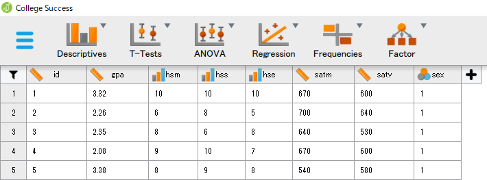
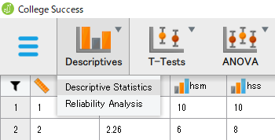
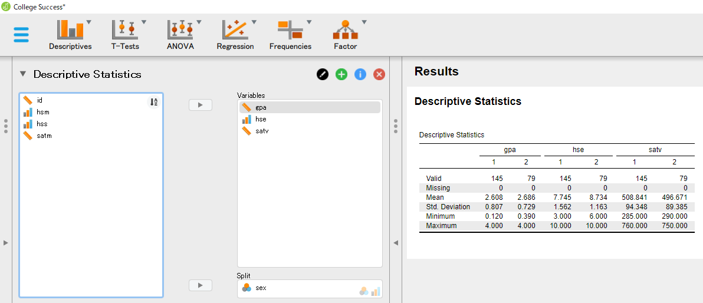
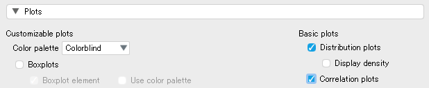
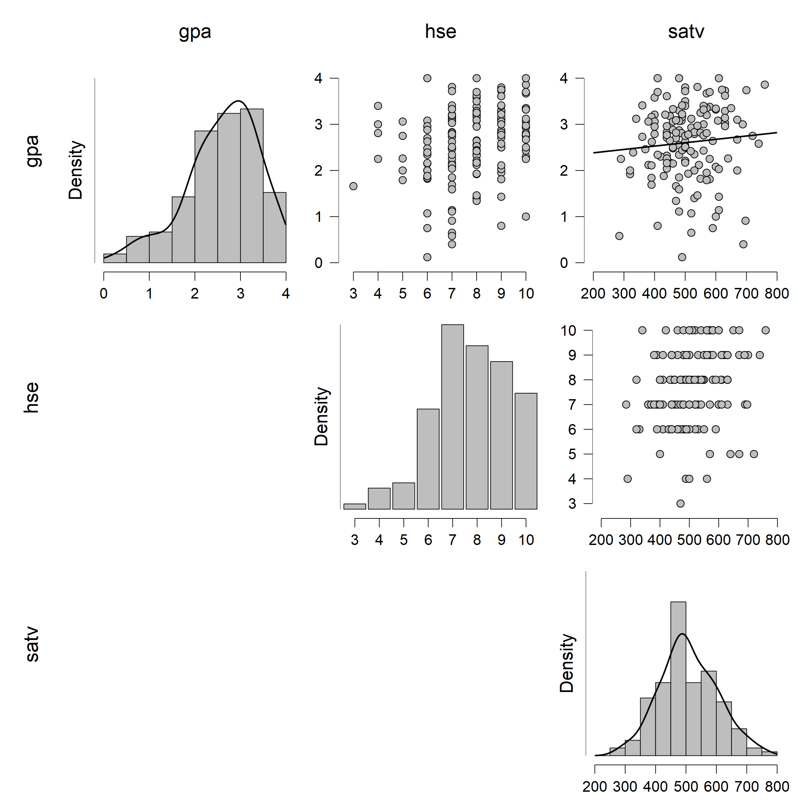
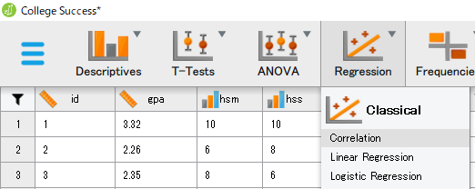
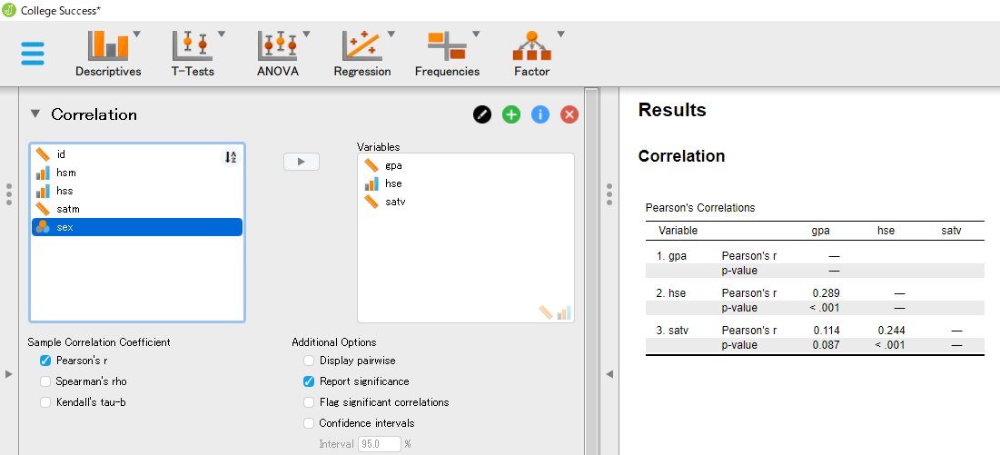

Next: 相関係数に関する推測 Up: JASPについて Previous: 起動とデータの読み込み
ここでは、Data Library にある練習用データを用いて記述統計量の算出等を行ってみることにする。
左上メニューから [Open]
 [Data Library]
[Data Library]
 [4. Regression] と進むと、[College Success] というデータセットが見つかる。
[4. Regression] と進むと、[College Success] というデータセットが見つかる。
右側のアイコンをダブルクリックして、.csv 形式のファイルを開いてみよう。 次のようなデータが表示されるはずだ。 これは、224名の学生について、大学の成績と高校の成績、大学入学適性試験の成績、および性別を記録したデータである。

主な変数について、概要は以下の通り。[1]
ウィンドウ上部の分析メニュー [Descriptives] をクリックし [Descriptive Statistics] を選択する。

記述統計量を算出するには、左側のボックスにある変数を選択して右側の "Variables" というボックスに移動させればよい。 ここでは、大学入学後の成績 gpa と高校における国語の成績 hse、SAT得点 satv について記述統計量を算出している。
右側の "Split" に性別 sex を移動させているが、これにより記述統計量を男女ごとに算出することができる。

右半分の "Results" 領域に "Descriptives" というメニューが現れ、そこに "Descriptive Statistics" として記述統計量の値が男女別に格納されている。 デフォルトでは、ここにあるように
変数を指定するボックスの下にある [Plots] を開き、チェックボックスにチェックを入れることでデータの様相をグラフとして確認することができる。

下は、gpa、hse、satv の3変数について、得点の分布と散布図（男性のデータ）を出力したものである。 なお、出力された図はタイトルをクリックして [Save Image As] を選択すれば、画像ファイルとしてダウンロードすることもできる。

再び分析メニューから [Regression]
 [Classical: Correlation] を選択してみよう。
[Classical: Correlation] を選択してみよう。

先ほどと同様、相関係数を算出したい変数を左側から右側のボックスに移動させると、相関係数行列が表示される。 （Pearson's r とあるのが相関係数の値。） このデータでは、大学入学適性試験の成績よりも高校の国語成績の方が、大学入学後の成績とより強い相関関係にあることがわかる。
デフォルトではボックス下の "Report significance" にチェックが入っており、相関係数の下に検定結果（有意確率の値）が表示される。 また、同様に "Confidence intervals" にチェックを入れれば、相関係数の信頼区間（信頼水準はデフォルトでは95%）について下限と上限の値が検定結果の下に表示される。

Taichi Okumura